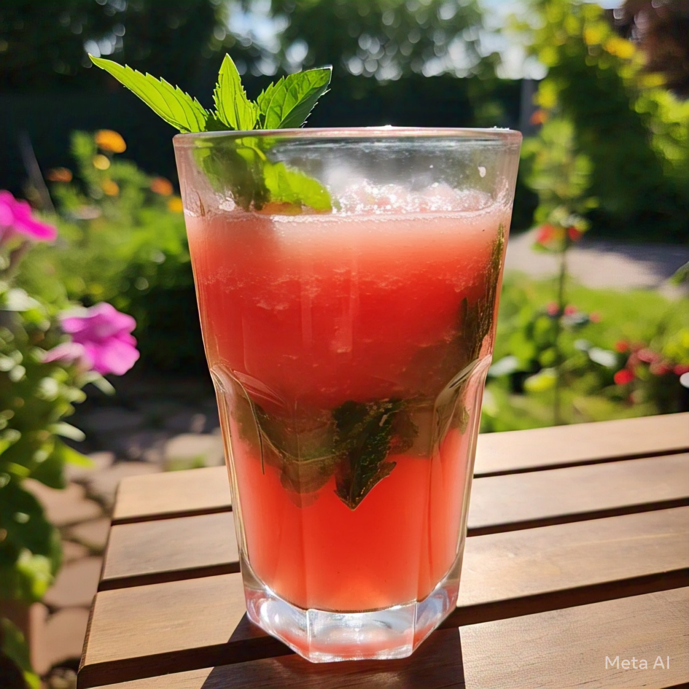
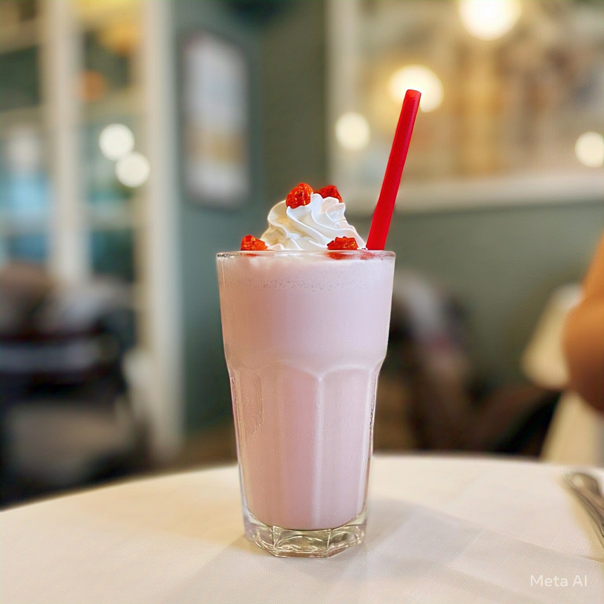
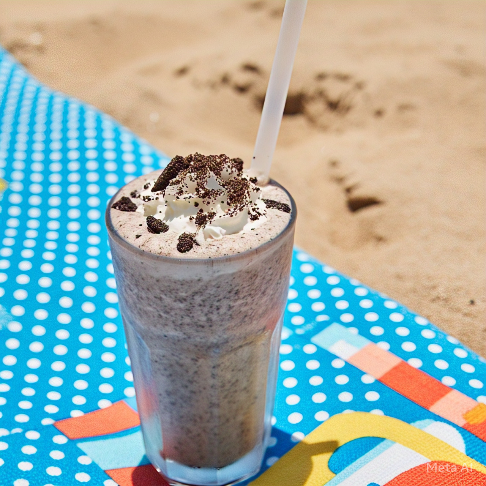
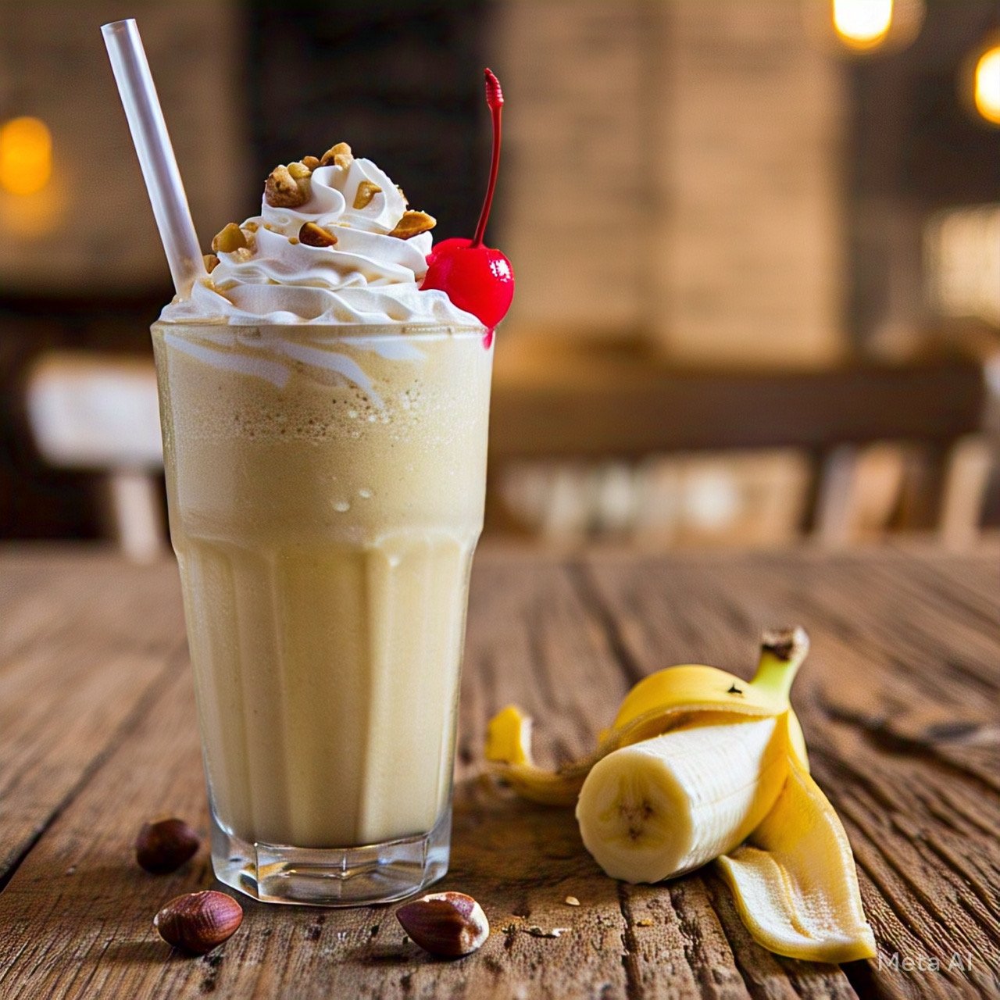
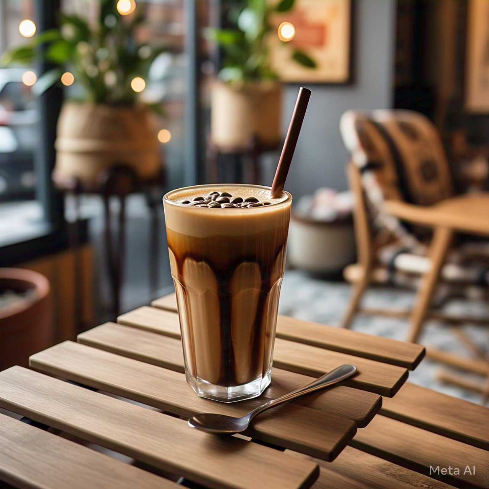

drinks menu list
1. Tropical Sunrise Juice
Ingredients
- 1 cup pineapple chunks
- 1 orange (peeled)
- 1/2 mango (peeled and sliced)
- 1/2 lemon (juiced)
- 1/2 cup cold water or coconut water
Preparation
-
Blend everything until smooth. Strain if needed. Serve chilled with ice.
2. Green Detox Juice
Ingredients
- 1 cup spinach
- 1 cucumber (chopped)
- 1 green apple (chopped)
- 1/2 lemon (juiced)
- A small piece of ginger
- 1/2 cup water
Preparation
-
Blend all ingredients. Strain to remove fiber if preferred. Add ice and enjoy!
3. Watermelon Mint Cooler Juice

Ingredients
- 2 cups watermelon (seedless, chopped)
- A few fresh mint leaves
- 1/2 lime (juiced)
- 1 tsp honey (optional)
Preparation
-
Blend the watermelon, mint, and lime juice. Strain and pour over ice.
4. Beetroot and Carrot Boost Juice
Ingredients
- 1 small beetroot (peeled and chopped)
- 2 carrots (peeled and chopped)
- 1 orange (peeled)
- 1/2 inch ginger
- 1/2 cup water
Preparation
-
Blend until smooth, strain if needed. Serve chilled for an immunity boost.
5. Apple Cinnamon Juice
Ingredients
- 2 apples (chopped)
- 1/2 tsp ground cinnamon
- 1/2 lemon (juiced)
- 1/2 cup cold water
Preparation
-
Blend all ingredients until smooth. Strain, pour over ice, and enjoy a sweet-spicy twist.
6. Classic Chocoloate Milkshake
Ingredients
- 2 cups chilled milk
- 3 scoops chocolate ice cream
- 2 tbsp chocolate syrup
- Whipped cream (optional)
Preparation
-
Blend milk, ice cream, and chocolate syrup until frothy. Pour into a glass and top with whipped cream and a drizzle of syrup.
7. Strawberry Milkshake

Ingredients
- 1 cup fresh or frozen strawberries
- 2 cups milk
- 2 scoops vanilla ice cream
- 1 tbsp sugar (optional)
Preparation
-
Blend all ingredients till smooth. Serve chilled with sliced strawberries on top.
8. Oreo Milkshake

Ingredients
- 4 Oreo biscuits
- 2 scoops vanilla ice cream
- 1 ½ cups milk
- Chocolate syrup (optional)
Preparation
-
Blend everything together. Decorate the glass with chocolate syrup and crushed Oreos on top.
9. Banana Milkshake

Ingredients
- 1 ripe banana
- 2 cups milk
- 2 scoops vanilla ice cream
- 1 tbsp peanut butter or chopped almonds
- Honey (optional)
Preparation
-
Blend until creamy. Garnish with crushed nuts or a banana slice.
10. Coffee Milkshake

Ingredients
- 1 cup cold milk
- 1 tsp instant coffee
- 2 scoops coffee or vanilla ice cream
- 1 tsp sugar (adjust to taste)
Preparation
-
Blend until frothy. Serve chilled with coffee powder dusted on top.